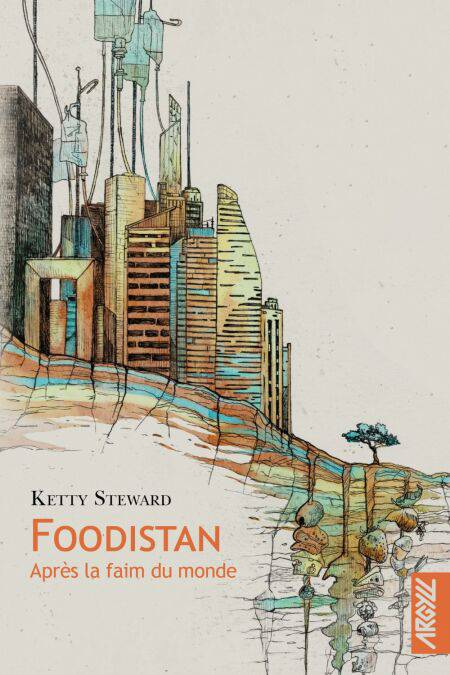

C’est le titre de Moi, Jean Gabin qui a d’abord attiré mon attention. Cette autobiographie raconte l’enfance mouvementée de Goliarda Sapienza vers la fin des années 1930 dans un quartier populaire de Catane, en Sicile. Elle y mène une vie bien remplie, moins par l’école que par ses rêves de liberté et de justice incarnés par Jean Gabin (acteur ou personnages, peu importe) dont chaque sortie de film est un événement quasiment sacré. A treize ou quatorze ans, elle aborde son quotidien avec une intensité qui rend la lecture très attendrissante. Pour autant, on devine une toile de fond marquée par la violence (avez-vous entendu parler du fascisme ?) et un environnement familial très politisé (avez-vous entendu parler de l’antifascisme ?). Même si j’ai sans doute manqué tout un tas de références aux films de l’époque (dont je ne sais à peu près rien), j’ai beaucoup aimé cette lecture. Il faut dire que l’écriture, à tout le moins sa traduction, est superbe.
Sortie originale (italien) : 2010 (posthume) / Version française : 2017 (traduction : Nathalie Castagné)
Etonnant livre que ce Foodistan de Ketty Steward. Comme son nom l’indique, on y cause de nourriture. L’humanité, collectivement traumatisée par une famine dévastatrice, en a fait une obsession structurante. D’ailleurs, au Foodistan, l’identité ne se forge qu’à partir des régimes alimentaires (qui sont nombreux et souvent surprenants). Comme il s’agit d’un court roman, les tenants et aboutissants de cet univers ne sont pas creusés et on sent que ce n’est pas là l’essentiel. A la place, on assiste à une rafale de jeux de mots qui m’ont beaucoup amusé et à des passages expérimentaux tels que d’énigmatiques listes de mots ou des recettes de cuisine. C’est aussi, bien sûr, une réflexion sur l’alimentation au sein de nos propres sociétés.
Sortie : 2024